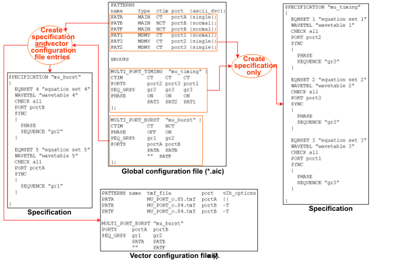

Generating the Specification and the Vector Configuration File
The following figure shows how the input information is converted and transferred to the target files. (The vector translation for this example is shown in Bursts and Multi-Port Bursts.)

Observe the following points in the previous figure:
- Since the patterns for the MULTI_PORT_TIMING are defined in the PATTERNS section with the type MDMY, they are not transferred to the vector configuration file.
- The CTIM row of the MULTI_PORT_BURST statement is not transferred to the vector configuration file. The vector related information it contains (for automatic insertion of CTIM instructions into the sequencer program) is passed to the vector translation in the pattern configuration files (*.vbc).